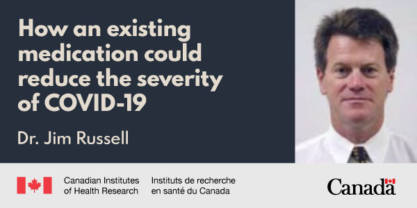

Old drug, new tricks: How an existing medication could reduce the severity of COVID-19
Researchers around the world are looking to develop new drugs to battle the COVID-19 pandemic, but some existing medications are also getting attention for their role in potentially reducing the severity of disease.
One such class of drugs includes those used to treat high blood pressure.The drugs—technically called
angiotensin II type 1 receptor blockers or ARBs—have been shown in previous studies to mitigate the worst effects of respiratory infection and viral pneumonia.These preliminary results caught the eye of Dr.Jim Russell, a Professor in the Department of Medicine at the University of British Columbia and Principal Investigator at the Centre for Heart Lung Innovation in St.Paul’s Hospital, who believes that these drugs may help prevent hospitalization, intensive care unit (ICU) admission, and death due to COVID-19.
This does not mean, however, that anyone should start taking the drugs to prevent infection or to manage their symptoms if they get sick.Those previous studies were based on animal models, and Dr. Russell notes that there is almost no data on the effectiveness of this treatment in humans.His study is therefore an important one to build on existing evidence and fill a crucial data gap.
Unlike a new antiviral treatment that would stop the virus in its tracks, Dr. Russell and his team are working with the theory that ARBs could reduce the severity of COVID-19 by decreasing inflammation in vital organs, such as the heart, or by decreasing the injury caused by angiotensin II (the hormone the drugs are already designed to block).These are important components for recovery, as studies have already shown that COVID-19 increases the risk of acute cardiac injury (i.e., damage to heart tissue) and that angiotensin II is very elevated in patients with COVID-19—which is bad news because the hormone narrows blood vessels, potentially starving the heart, kidneys, and intestines of blood and oxygen.If ARBs can help reduce the likelihood of either of these outcomes, then the risk of death will decrease, as well.
'There are many opinions about whether or not these cardiovascular drugs will help with COVID-19, but we won’t know for sure without any data,' says Dr. Russell, noting that his team is coordinating the study across 30 Canadian sites.'We hope that we can be the best study to answer the question about whether personalized use of ARBs can work.'
Posted On: 2020-06-03T00:00:00

Content Date: 2020-06-03
Download Date: 2021-05-30
Document ID: L0C04CV6H